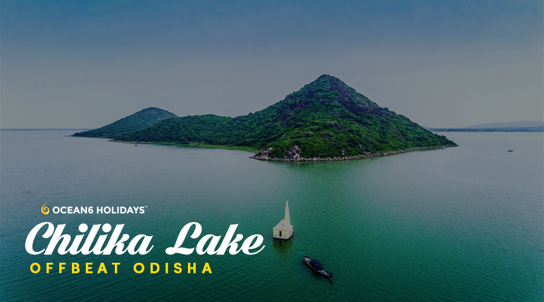
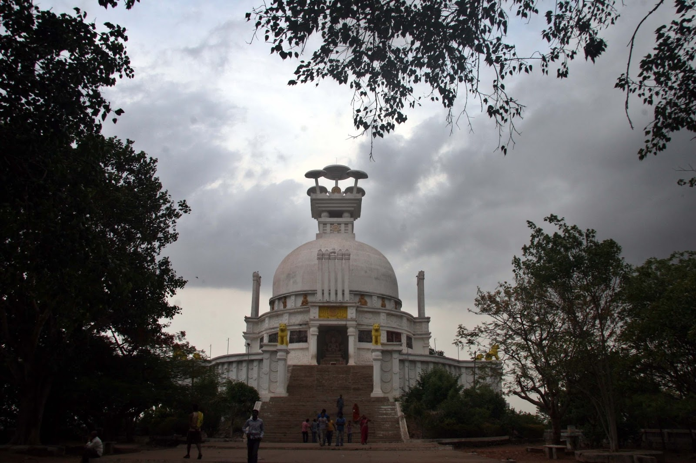
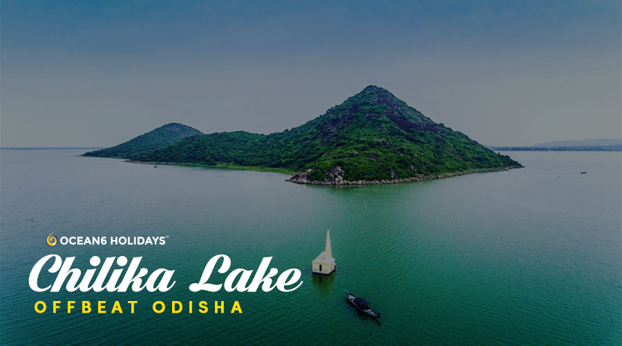
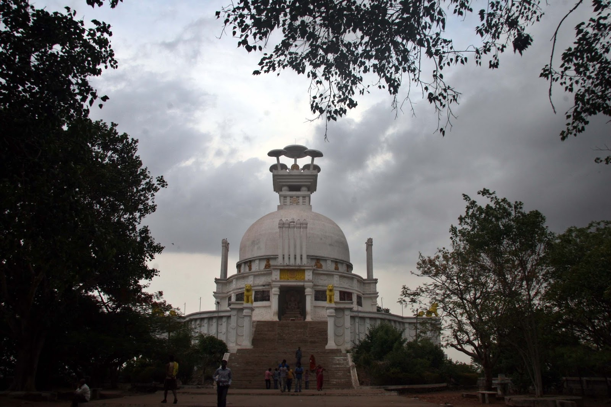

DIRECT FROM ROOMS
The most famous tourist address of the State, the city is synonymous
with Lord Jagannath & his siblings Lord Balabhadra & Goddess
Subhadra.
The ancient city and its history are intertwined with Lord
Jagannath. The city is one of the Char Dham’s (Four sacred places)
of India. The Char Dham’s were established by Adi Shankaracharya.
Besides the cult of Lord Jagannath & the mysticism attached with
Puri, It’s one of the few destinations where one can combine
spiritual salvation with fun & adventure. The city is dotted with
many old shrines and Matha’s (Ashram’s) each having its own little
story which weaves itself in the larger canvas attached with Lord
Jagannath.
 


